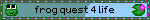

Muse Jukebox
Jukebot
MUSE JUKEBOX · MODEL JKB-01
Welcome to the semi-complete library of my Muse Tunes - gathered right in one place. Feel free to scroll through or filter the song list by genre, vibe, or whatever tag you feel like. 🌊
Help! I'm glitching!
Bugs got into my wiring. Hold my 4 corner screws to open me up and fix me.
Settings
Tips
- Tap the loop button once to keep songs playing, twice to repeat one song.
- Drag the record back and forth to scratch like a DJ.
- Tap any song's wave to play it from there. Drag the playing one to skip around.
- Tap a tag or a year on a song to filter the list.
- Can't pick? The dice plays a random song.
- Keep playing carries on with your screen off.
- Tap the record on top of the jukebox (or turn your phone sideways) for the big turntable.
- Folded Duo? The controls live in the side strip. Drag them to move them.
- The × on the playing song stops it and clears it away.
- Tap a penguin to stop (or start) the dancing.
